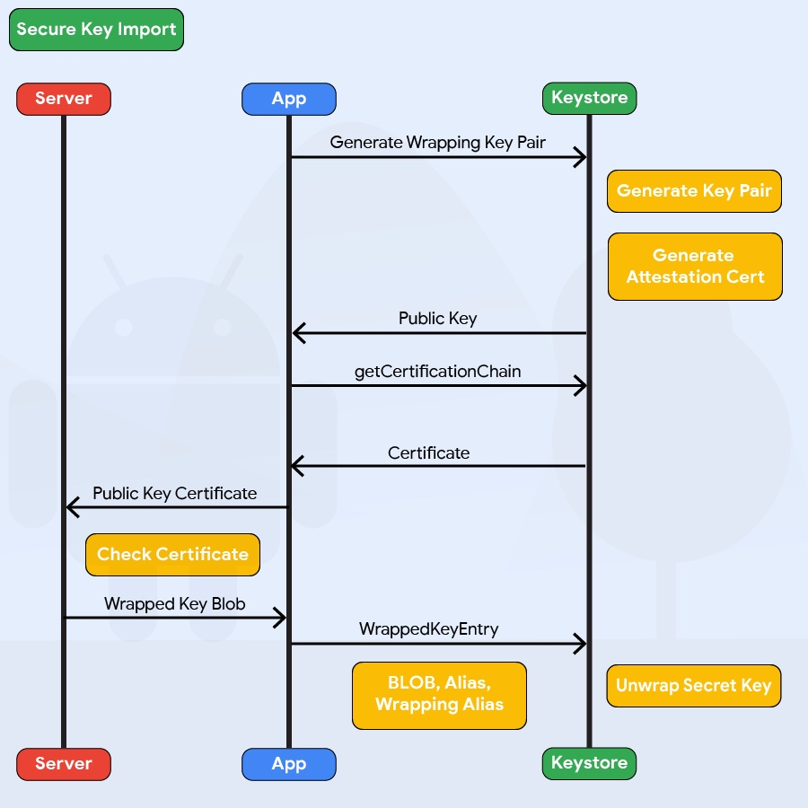
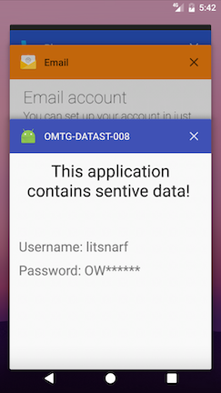
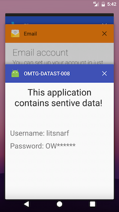
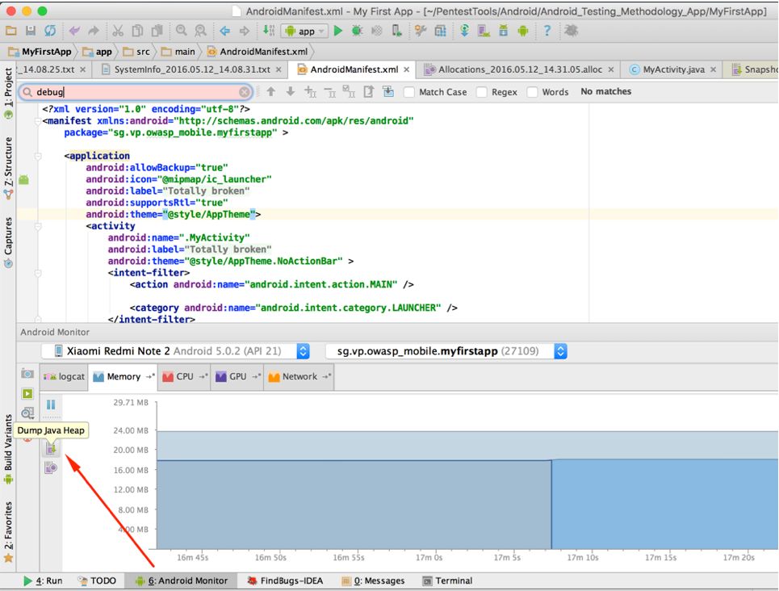
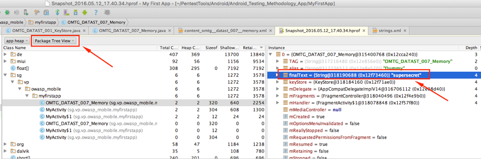

Android Data Storage¶
Protecting authentication tokens, private information, and other sensitive data is key to mobile security. In this chapter, you will learn about the APIs Android offers for local data storage and best practices for using them.
The guidelines for saving data can be summarized quite easily: Public data should be available to everyone, but sensitive and private data must be protected, or, better yet, kept out of device storage.
This chapter is broken into two sections, the first of which focuses on the theory of data storage from a security perspective as well as a brief explanation and example of the various methods of data storage on Android.
The second section focuses on the testing of these data storage solutions through the usage of test cases that utilize both static and dynamic analysis.
Theory Overview¶
Storing data is essential to many mobile apps. Conventional wisdom suggests that as little sensitive data as possible should be stored on permanent local storage. In most practical scenarios, however, some type of user data must be stored. For example, asking the user to enter a very complex password every time the app starts isn't a great idea in terms of usability. Most apps must locally cache some kind of authentication token to avoid this. Personally identifiable information (PII) and other types of sensitive data may also be saved if a given scenario calls for it.
Sensitive data is vulnerable when it is not properly protected by the app that is persistently storing it. The app may be able to store the data in several places, for example, on the device or on an external SD card. When you're trying to exploit these kinds of issues, consider that a lot of information may be processed and stored in different locations.
First, it is important to identify the kind of information processed by the mobile application and input by the user. Next, determining what can be considered sensitive data that may be valuable to attackers (e.g., passwords, credit card information, PII) is not always a trivial task and it strongly depends on the context of the target application. You can find more details regarding data classification in the "Identifying Sensitive Data" section of the chapter "Mobile App Security Testing". For general information on Android Data Storage Security, refer to the Security Tips for Storing Data in the Android developer's guide.
Disclosing sensitive information has several consequences, including decrypted information. In general, an attacker may identify this information and use it for additional attacks, such as social engineering (if PII has been disclosed), account hijacking (if session information or an authentication token has been disclosed), and gathering information from apps that have a payment option (to attack and abuse them).
Next to protecting sensitive data, you need to ensure that data read from any storage source is validated and possibly sanitized. The validation usually ranges from checking for the correct data types to using additional cryptographic controls, such as an HMAC, you can validate the integrity of the data.
Data Storage Methods Overview¶
Android provides a number of methods for data storage depending on the needs of the user, developer, and application. For example, some apps use data storage to keep track of user settings or user-provided data. Data can be stored persistently for this use case in several ways. The following list of persistent storage techniques are widely used on the Android platform:
- Shared Preferences
- SQLite Databases
- Firebase Databases
- Realm Databases
- Internal Storage
- External Storage
- Keystore
In addition to this, there are a number of other functions in Android built for various use cases that can also result in the storage of data and respectively should also be tested, such as:
- Logging Functions
- Android Backups
- Processes Memory
- Keyboard Caches
- Screenshots
It is important to understand each relevant data storage function in order to correctly perform the appropriate test cases. This overview aims to provide a brief outline of each of these data storage methods, as well as point testers to further relevant documentation.
Shared Preferences¶
The SharedPreferences API is commonly used to permanently save small collections of key-value pairs. Data stored in a SharedPreferences object is written to a plain-text XML file. The SharedPreferences object can be declared world-readable (accessible to all apps) or private. Misuse of the SharedPreferences API can often lead to exposure of sensitive data. Consider the following example:
Example for Java:
SharedPreferences sharedPref = getSharedPreferences("key", MODE_WORLD_READABLE);
SharedPreferences.Editor editor = sharedPref.edit();
editor.putString("username", "administrator");
editor.putString("password", "supersecret");
editor.commit();
Example for Kotlin:
var sharedPref = getSharedPreferences("key", Context.MODE_WORLD_READABLE)
var editor = sharedPref.edit()
editor.putString("username", "administrator")
editor.putString("password", "supersecret")
editor.commit()
Once the activity has been called, the file key.xml will be created with the provided data. This code violates several best practices.
- The username and password are stored in clear text in
/data/data/<package-name>/shared_prefs/key.xml.
<?xml version='1.0' encoding='utf-8' standalone='yes' ?>
<map>
<string name="username">administrator</string>
<string name="password">supersecret</string>
</map>
MODE_WORLD_READABLEallows all applications to access and read the contents ofkey.xml.
root@hermes:/data/data/sg.vp.owasp_mobile.myfirstapp/shared_prefs # ls -la
-rw-rw-r-- u0_a118 170 2016-04-23 16:51 key.xml
Please note that
MODE_WORLD_READABLEandMODE_WORLD_WRITEABLEwere deprecated starting on API level 17. Although newer devices may not be affected by this, applications compiled with anandroid:targetSdkVersionvalue less than 17 may be affected if they run on an OS version that was released before Android 4.2 (API level 17).
Databases¶
The Android platform provides a number of database options as aforementioned in the previous list. Each database option has its own quirks and methods that need to be understood.
SQLite Database (Unencrypted)¶
SQLite is an SQL database engine that stores data in .db files. The Android SDK has built-in support for SQLite databases. The main package used to manage the databases is android.database.sqlite.
For example, you may use the following code to store sensitive information within an activity:
Example in Java:
SQLiteDatabase notSoSecure = openOrCreateDatabase("privateNotSoSecure", MODE_PRIVATE, null);
notSoSecure.execSQL("CREATE TABLE IF NOT EXISTS Accounts(Username VARCHAR, Password VARCHAR);");
notSoSecure.execSQL("INSERT INTO Accounts VALUES('admin','AdminPass');");
notSoSecure.close();
Example in Kotlin:
var notSoSecure = openOrCreateDatabase("privateNotSoSecure", Context.MODE_PRIVATE, null)
notSoSecure.execSQL("CREATE TABLE IF NOT EXISTS Accounts(Username VARCHAR, Password VARCHAR);")
notSoSecure.execSQL("INSERT INTO Accounts VALUES('admin','AdminPass');")
notSoSecure.close()
Once the activity has been called, the database file privateNotSoSecure will be created with the provided data and stored in the clear text file /data/data/<package-name>/databases/privateNotSoSecure.
The database's directory may contain several files besides the SQLite database:
- Journal files: These are temporary files used to implement atomic commit and rollback.
- Lock files: The lock files are part of the locking and journaling feature, which was designed to improve SQLite concurrency and reduce the writer starvation problem.
Sensitive information should not be stored in unencrypted SQLite databases.
SQLite Databases (Encrypted)¶
With the library SQLCipher, SQLite databases can be password-encrypted.
Example in Java:
SQLiteDatabase secureDB = SQLiteDatabase.openOrCreateDatabase(database, "password123", null);
secureDB.execSQL("CREATE TABLE IF NOT EXISTS Accounts(Username VARCHAR,Password VARCHAR);");
secureDB.execSQL("INSERT INTO Accounts VALUES('admin','AdminPassEnc');");
secureDB.close();
Example in Kotlin:
var secureDB = SQLiteDatabase.openOrCreateDatabase(database, "password123", null)
secureDB.execSQL("CREATE TABLE IF NOT EXISTS Accounts(Username VARCHAR,Password VARCHAR);")
secureDB.execSQL("INSERT INTO Accounts VALUES('admin','AdminPassEnc');")
secureDB.close()
Secure ways to retrieve the database key include:
- Asking the user to decrypt the database with a PIN or password once the app is opened (weak passwords and PINs are vulnerable to brute force attacks)
- Storing the key on the server and allowing it to be accessed from a web service only (so that the app can be used only when the device is online)
Firebase Real-time Databases¶
Firebase is a development platform with more than 15 products, and one of them is Firebase Real-time Database. It can be leveraged by application developers to store and sync data with a NoSQL cloud-hosted database. The data is stored as JSON and is synchronized in real-time to every connected client and also remains available even when the application goes offline.
A misconfigured Firebase instance can be identified by making the following network call:
https://_firebaseProjectName_.firebaseio.com/.json
The firebaseProjectName can be retrieved from the mobile application by reverse engineering the application. Alternatively, the analysts can use Firebase Scanner, a python script that automates the task above as shown below:
python FirebaseScanner.py -p <pathOfAPKFile>
python FirebaseScanner.py -f <commaSeperatedFirebaseProjectNames>
Realm Databases¶
The Realm Database for Java is becoming more and more popular among developers. The database and its contents can be encrypted with a key stored in the configuration file.
//the getKey() method either gets the key from the server or from a KeyStore, or is derived from a password.
RealmConfiguration config = new RealmConfiguration.Builder()
.encryptionKey(getKey())
.build();
Realm realm = Realm.getInstance(config);
If the database is not encrypted, you should be able to obtain the data. If the database is encrypted, determine whether the key is hard-coded in the source or resources and whether it is stored unprotected in shared preferences or some other location.
Internal Storage¶
You can save files to the device's internal storage. Files saved to internal storage are containerized by default and cannot be accessed by other apps on the device. When the user uninstalls your app, these files are removed. The following code snippets would persistently store sensitive data to internal storage.
Example for Java:
FileOutputStream fos = null;
try {
fos = openFileOutput(FILENAME, Context.MODE_PRIVATE);
fos.write(test.getBytes());
fos.close();
} catch (FileNotFoundException e) {
e.printStackTrace();
} catch (IOException e) {
e.printStackTrace();
}
Example for Kotlin:
var fos: FileOutputStream? = null
fos = openFileOutput("FILENAME", Context.MODE_PRIVATE)
fos.write(test.toByteArray(Charsets.UTF_8))
fos.close()
You should check the file mode to make sure that only the app can access the file. You can set this access with MODE_PRIVATE. Modes such as MODE_WORLD_READABLE (deprecated) and MODE_WORLD_WRITEABLE (deprecated) may pose a security risk.
Search for the class FileInputStream to find out which files are opened and read within the app.
External Storage¶
Every Android-compatible device supports shared external storage. This storage may be removable (such as an SD card) or internal (non-removable).
Files saved to external storage are world-readable. The user can modify them when USB mass storage is enabled.
You can use the following code snippets to persistently store sensitive information to external storage as the contents of the file password.txt.
Example for Java:
File file = new File (Environment.getExternalFilesDir(), "password.txt");
String password = "SecretPassword";
FileOutputStream fos;
fos = new FileOutputStream(file);
fos.write(password.getBytes());
fos.close();
Example for Kotlin:
val password = "SecretPassword"
val path = context.getExternalFilesDir(null)
val file = File(path, "password.txt")
file.appendText(password)
The file will be created and the data will be stored in a clear text file in external storage once the activity has been called.
It's also worth knowing that files stored outside the application folder (data/data/<package-name>/) will not be deleted when the user uninstalls the application.
Finally, it's worth noting that the external storage can be used by an attacker to allow for arbitrary control of the application in some cases. For more information: see the blog from Checkpoint.
KeyStore¶
The Android KeyStore supports relatively secure credential storage. As of Android 4.3 (API level 18), it provides public APIs for storing and using app-private keys. An app can use a public key to create a new private/public key pair for encrypting application secrets, and it can decrypt the secrets with the private key.
You can protect keys stored in the Android KeyStore with user authentication in a confirm credential flow. The user's lock screen credentials (pattern, PIN, password, or fingerprint) are used for authentication.
You can use stored keys in one of two modes:
-
Users are authorized to use keys for a limited period of time after authentication. In this mode, all keys can be used as soon as the user unlocks the device. You can customize the period of authorization for each key. You can use this option only if the secure lock screen is enabled. If the user disables the secure lock screen, all stored keys will become permanently invalid.
-
Users are authorized to use a specific cryptographic operation that is associated with one key. In this mode, users must request a separate authorization for each operation that involves the key. Currently, fingerprint authentication is the only way to request such authorization.
The level of security afforded by the Android KeyStore depends on its implementation, which depends on the device. Most modern devices offer a hardware-backed KeyStore implementation: keys are generated and used in a Trusted Execution Environment (TEE) or a Secure Element (SE), and the operating system can't access them directly. This means that the encryption keys themselves can't be easily retrieved, even from a rooted device. You can verify hardware-backed keys with Key Attestation You can determine whether the keys are inside the secure hardware by checking the return value of the isInsideSecureHardware method, which is part of the KeyInfo class.
Note that the relevant KeyInfo indicates that secret keys and HMAC keys are insecurely stored on several devices despite private keys being correctly stored on the secure hardware.
The keys of a software-only implementation are encrypted with a per-user encryption master key. An attacker can access all keys stored on rooted devices that have this implementation in the folder /data/misc/keystore/. Because the user's lock screen pin/password is used to generate the master key, the Android KeyStore is unavailable when the device is locked. For more security Android 9 (API level 28) introduces the unlockedDeviceRequied flag. By passing true to the setUnlockedDeviceRequired method the app prevents its keys stored in AndroidKeystore from being decrypted when the device is locked, and it requires the screen to be unlocked before allowing decryption.
Hardware-backed Android KeyStore¶
As mentioned before, hardware-backed Android KeyStore gives another layer to defense-in-depth security concept for Android. Keymaster Hardware Abstraction Layer (HAL) was introduced with Android 6 (API level 23). Applications can verify if the key is stored inside the security hardware (by checking if KeyInfo.isinsideSecureHardware returns true). Devices running Android 9 (API level 28) and higher can have a StrongBox Keymaster module, an implementation of the Keymaster HAL that resides in a hardware security module which has its own CPU, Secure storage, a true random number generator and a mechanism to resist package tampering. To use this feature, true must be passed to the setIsStrongBoxBacked method in either the KeyGenParameterSpec.Builder class or the KeyProtection.Builder class when generating or importing keys using AndroidKeystore. To make sure that StrongBox is used during runtime, check that isInsideSecureHardware returns true and that the system does not throw StrongBoxUnavailableException which gets thrown if the StrongBox Keymaster isn't available for the given algorithm and key size associated with a key. Description of features on hardware-based keystore can be found on AOSP pages.
Keymaster HAL is an interface to hardware-backed components - Trusted Execution Environment (TEE) or a Secure Element (SE), which is used by Android Keystore. An example of such a hardware-backed component is Titan M.
Key Attestation¶
For the applications which heavily rely on Android Keystore for business-critical operations such as multi-factor authentication through cryptographic primitives, secure storage of sensitive data at the client-side, etc. Android provides the feature of Key Attestation which helps to analyze the security of cryptographic material managed through Android Keystore. From Android 8.0 (API level 26), the key attestation was made mandatory for all new (Android 7.0 or higher) devices that need to have device certification for Google apps. Such devices use attestation keys signed by the Google hardware attestation root certificate and the same can be verified through the key attestation process.
During key attestation, we can specify the alias of a key pair and in return, get a certificate chain, which we can use to verify the properties of that key pair. If the root certificate of the chain is the Google Hardware Attestation Root certificate and the checks related to key pair storage in hardware are made it gives an assurance that the device supports hardware-level key attestation and the key is in the hardware-backed keystore that Google believes to be secure. Alternatively, if the attestation chain has any other root certificate, then Google does not make any claims about the security of the hardware.
Although the key attestation process can be implemented within the application directly but it is recommended that it should be implemented at the server-side for security reasons. The following are the high-level guidelines for the secure implementation of Key Attestation:
- The server should initiate the key attestation process by creating a random number securely using CSPRNG(Cryptographically Secure Random Number Generator) and the same should be sent to the user as a challenge.
- The client should call the
setAttestationChallengeAPI with the challenge received from the server and should then retrieve the attestation certificate chain using theKeyStore.getCertificateChainmethod. - The attestation response should be sent to the server for the verification and following checks should be performed for the verification of the key attestation response:
- Verify the certificate chain, up to the root and perform certificate sanity checks such as validity, integrity and trustworthiness. Check the Certificate Revocation Status List maintained by Google, if none of the certificates in the chain was revoked.
- Check if the root certificate is signed with the Google attestation root key which makes the attestation process trustworthy.
- Extract the attestation certificate extension data, which appears within the first element of the certificate chain and perform the following checks:
- Verify that the attestation challenge is having the same value which was generated at the server while initiating the attestation process.
- Verify the signature in the key attestation response.
- Verify the security level of the Keymaster to determine if the device has secure key storage mechanism. Keymaster is a piece of software that runs in the security context and provides all the secure keystore operations. The security level will be one of
Software,TrustedEnvironmentorStrongBox. The client supports hardware-level key attestation if security level isTrustedEnvironmentorStrongBoxand attestation certificate chain contains a root certificate signed with Google attestation root key. - Verify client's status to ensure full chain of trust - verified boot key, locked bootloader and verified boot state.
- Additionally, you can verify the key pair's attributes such as purpose, access time, authentication requirement, etc.
Note, if for any reason that process fails, it means that the key is not in security hardware. That does not mean that the key is compromised.
The typical example of Android Keystore attestation response looks like this:
{
"fmt": "android-key",
"authData": "9569088f1ecee3232954035dbd10d7cae391305a2751b559bb8fd7cbb229bd...",
"attStmt": {
"alg": -7,
"sig": "304402202ca7a8cfb6299c4a073e7e022c57082a46c657e9e53...",
"x5c": [
"308202ca30820270a003020102020101300a06082a8648ce3d040302308188310b30090603550406130...",
"308202783082021ea00302010202021001300a06082a8648ce3d040302308198310b300906035504061...",
"3082028b30820232a003020102020900a2059ed10e435b57300a06082a8648ce3d040302308198310b3..."
]
}
}
In the above JSON snippet, the keys have the following meaning:
fmt: Attestation statement format identifier
authData: It denotes the authenticator data for the attestation
alg: The algorithm that is used for the Signature
sig: Signature
x5c: Attestation certificate chain
Note: The sig is generated by concatenating authData and clientDataHash (challenge sent by the server) and signing through the credential private key using the alg signing algorithm and the same is verified at the server-side by using the public key in the first certificate.
For more understanding on the implementation guidelines, Google Sample Code can be referred.
For the security analysis perspective the analysts may perform the following checks for the secure implementation of Key Attestation:
- Check if the key attestation is totally implemented at the client-side. In such scenario, the same can be easily bypassed by tampering the application, method hooking, etc.
- Check if the server uses random challenge while initiating the key attestation. As failing to do that would lead to insecure implementation thus making it vulnerable to replay attacks. Also, checks pertaining to the randomness of the challenge should be performed.
- Check if the server verifies the integrity of key attestation response.
- Check if the server performs basic checks such as integrity verification, trust verification, validity, etc. on the certificates in the chain.
Secure Key Import into Keystore¶
Android 9 (API level 28) adds the ability to import keys securely into the AndroidKeystore. First AndroidKeystore generates a key pair using PURPOSE_WRAP_KEY which should also be protected with an attestation certificate, this pair aims to protect the Keys being imported to AndroidKeystore. The encrypted keys are generated as ASN.1-encoded message in the SecureKeyWrapper format which also contains a description of the ways the imported key is allowed to be used. The keys are then decrypted inside the AndroidKeystore hardware belonging to the specific device that generated the wrapping key so they never appear as plaintext in the device's host memory.

Example in Java:
KeyDescription ::= SEQUENCE {
keyFormat INTEGER,
authorizationList AuthorizationList
}
SecureKeyWrapper ::= SEQUENCE {
wrapperFormatVersion INTEGER,
encryptedTransportKey OCTET_STRING,
initializationVector OCTET_STRING,
keyDescription KeyDescription,
secureKey OCTET_STRING,
tag OCTET_STRING
}
The code above present the different parameters to be set when generating the encrypted keys in the SecureKeyWrapper format. Check the Android documentation on WrappedKeyEntry for more details.
When defining the KeyDescription AuthorizationList, the following parameters will affect the encrypted keys security:
- The
algorithmparameter Specifies the cryptographic algorithm with which the key is used - The
keySizeparameter Specifies the size, in bits, of the key, measuring in the normal way for the key's algorithm - The
digestparameter Specifies the digest algorithms that may be used with the key to perform signing and verification operations
Older KeyStore Implementations¶
Older Android versions don't include KeyStore, but they do include the KeyStore interface from JCA (Java Cryptography Architecture). You can use KeyStores that implement this interface to ensure the secrecy and integrity of keys stored with KeyStore; BouncyCastle KeyStore (BKS) is recommended. All implementations are based on the fact that files are stored on the filesystem; all files are password-protected.
To create one, you can use the KeyStore.getInstance("BKS", "BC") method, where "BKS" is the KeyStore name (BouncyCastle Keystore) and "BC" is the provider (BouncyCastle). You can also use SpongyCastle as a wrapper and initialize the KeyStore as follows: KeyStore.getInstance("BKS", "SC").
Be aware that not all KeyStores properly protect the keys stored in the KeyStore files.
KeyChain¶
The KeyChain class is used to store and retrieve system-wide private keys and their corresponding certificates (chain). The user will be prompted to set a lock screen pin or password to protect the credential storage if something is being imported into the KeyChain for the first time. Note that the KeyChain is system-wide, every application can access the materials stored in the KeyChain.
Inspect the source code to determine whether native Android mechanisms identify sensitive information. Sensitive information should be encrypted, not stored in clear text. For sensitive information that must be stored on the device, several API calls are available to protect the data via the KeyChain class. Complete the following steps:
- Make sure that the app is using the Android KeyStore and Cipher mechanisms to securely store encrypted information on the device. Look for the patterns
AndroidKeystore,import java.security.KeyStore,import javax.crypto.Cipher,import java.security.SecureRandom, and corresponding usages. - Use the
store(OutputStream stream, char[] password)function to store the KeyStore to disk with a password. Make sure that the password is provided by the user, not hard-coded.
Storing a Cryptographic Key: Techniques¶
To mitigate unauthorized use of keys on the Android device, Android KeyStore lets apps specify authorized uses of their keys when generating or importing the keys. Once made, authorizations cannot be changed.
Storing a Key - from most secure to least secure:
- the key is stored in hardware-backed Android KeyStore
- all keys are stored on server and are available after strong authentication
- master key is stored on server and use to encrypt other keys, which are stored in Android SharedPreferences
- the key is derived each time from a strong user provided passphrase with sufficient length and salt
- the key is stored in software implementation of Android KeyStore
- master key is stored in software implementation of Android Keystore and used to encrypt other keys, which are stored in SharedPreferences
- [not recommended] all keys are stored in SharedPreferences
- [not recommended] hardcoded encryption keys in the source code
- [not recommended] predictable obfuscation function or key derivation function based on stable attributes
- [not recommended] stored generated keys in public places (like
/sdcard/)
Storing Keys Using Hardware-backed Android KeyStore¶
You can use the hardware-backed Android KeyStore if the device is running Android 7.0 (API level 24) and above with available hardware component (Trusted Execution Environment (TEE) or a Secure Element (SE)). You can even verify that the keys are hardware-backed by using the guidelines provided for the secure implementation of Key Attestation. If a hardware component is not available and/or support for Android 6.0 (API level 23) and below is required, then you might want to store your keys on a remote server and make them available after authentication.
Storing Keys on the Server¶
It is possible to securely store keys on a key management server, however the app needs to be online to decrypt the data. This might be a limitation for certain mobile app use cases and should be carefully thought through as this becomes part of the architecture of the app and might highly impact usability.
Deriving Keys from User Input¶
Deriving a key from a user provided passphrase is a common solution (depending on which Android API level you use), but it also impacts usability, might affect the attack surface and could introduce additional weaknesses.
Each time the application needs to perform a cryptographic operation, the user's passphrase is needed. Either the user is prompted for it every time, which isn't an ideal user experience, or the passphrase is kept in memory as long as the user is authenticated. Keeping the passphrase in memory is not a best-practice as any cryptographic material must only be kept in memory while it is being used. Zeroing out a key is often a very challenging task as explained in "Cleaning out Key Material".
Additionally, consider that keys derived from a passphrase have their own weaknesses. For instance, the passwords or passphrases might be reused by the user or easy to guess. Please refer to the Testing Cryptography chapter for more information.
Cleaning out Key Material¶
The key material should be cleared out from memory as soon as it is not need anymore. There are certain limitations of realibly cleaning up secret data in languages with garbage collector (Java) and immutable strings (Swift, Objective-C, Kotlin). Java Cryptography Architecture Reference Guide suggests using char[] instead of String for storing sensitive data, and nullify array after usage.
Note that some ciphers do not properly clean up their byte-arrays. For instance, the AES Cipher in BouncyCastle does not always clean up its latest working key leaving some copies of the byte-array in memory. Next, BigInteger based keys (e.g. private keys) cannot be removed from the heap nor zeroed out without additional effort. Clearing byte array can be achieved by writing a wrapper which implements Destroyable.
Storing Keys using Android KeyStore API¶
More user-friendly and recommended way is to use the Android KeyStore API system (itself or through KeyChain) to store key material. If it is possible, hardware-backed storage should be used. Otherwise, it should fallback to software implementation of Android Keystore. However, be aware that the AndroidKeyStore API has been changed significantly throughout various versions of Android. In earlier versions, the AndroidKeyStore API only supported storing public/private key pairs (e.g., RSA). Symmetric key support has only been added since Android 6.0 (API level 23). As a result, a developer needs to handle the different Android API levels to securely store symmetric keys.
Storing keys by encrypting them with other keys¶
In order to securely store symmetric keys on devices running on Android 5.1 (API level 22) or lower, we need to generate a public/private key pair. We encrypt the symmetric key using the public key and store the private key in the AndroidKeyStore. The encrypted symmetric key can encoded using base64 and stored in the SharedPreferences. Whenever we need the symmetric key, the application retrieves the private key from the AndroidKeyStore and decrypts the symmetric key.
Envelope encryption, or key wrapping, is a similar approach that uses symmetric encryption to encapsulate key material. Data encryption keys (DEKs) can be encrypted with key encryption keys (KEKs) which are securely stored. Encrypted DEKs can be stored in SharedPreferences or written to files. When required, the application reads the KEK, then decrypts the DEK. Refer to OWASP Cryptographic Storage Cheat Sheet to learn more about encrypting cryptographic keys.
Also, as the illustration of this approach, refer to the EncryptedSharedPreferences from androidx.security.crypto package.
Insecure options to store keys¶
A less secure way of storing encryption keys, is in the SharedPreferences of Android. When SharedPreferences are used, the file is only readable by the application that created it. However, on rooted devices any other application with root access can simply read the SharedPreference file of other apps. This is not the case for the AndroidKeyStore. Since AndroidKeyStore access is managed on kernel level, which needs considerably more work and skill to bypass without the AndroidKeyStore clearing or destroying the keys.
The last three options are to use hardcoded encryption keys in the source code, having a predictable obfuscation function or key derivation function based on stable attributes, and storing generated keys in public places like /sdcard/. Hardcoded encryption keys are an issue since this means every instance of the application uses the same encryption key. An attacker can reverse-engineer a local copy of the application in order to extract the cryptographic key, and use that key to decrypt any data which was encrypted by the application on any device.
Next, when you have a predictable key derivation function based on identifiers which are accessible to other applications, the attacker only needs to find the KDF and apply it to the device in order to find the key. Lastly, storing encryption keys publicly also is highly discouraged as other applications can have permission to read the public partition and steal the keys.
Third Party libraries¶
There are several different open-source libraries that offer encryption capabilities specific for the Android platform.
- Java AES Crypto - A simple Android class for encrypting and decrypting strings.
- SQL Cipher - SQLCipher is an open source extension to SQLite that provides transparent 256-bit AES encryption of database files.
- Secure Preferences - Android Shared preference wrapper than encrypts the keys and values of Shared Preferences.
- Themis - A cross-platform high-level cryptographic library that provides same API across many platforms for securing data during authentication, storage, messaging, etc.
Please keep in mind that as long as the key is not stored in the KeyStore, it is always possible to easily retrieve the key on a rooted device and then decrypt the values you are trying to protect.
Logs¶
There are many legitimate reasons to create log files on a mobile device, such as keeping track of crashes, errors, and usage statistics. Log files can be stored locally when the app is offline and sent to the endpoint once the app is online. However, logging sensitive data may expose the data to attackers or malicious applications, and it might also violate user confidentiality. You can create log files in several ways. The following list includes two classes that are available for Android:
Backups¶
Android provides users with an auto-backup feature. The backups usually include copies of data and settings for all installed apps. Given its diverse ecosystem, Android supports many backup options:
-
Stock Android has built-in USB backup facilities. When USB debugging is enabled, you can use the
adb backupcommand to create full data backups and backups of an app's data directory. -
Google provides a "Back Up My Data" feature that backs up all app data to Google's servers.
-
Two Backup APIs are available to app developers:
-
Key/Value Backup (Backup API or Android Backup Service) uploads to the Android Backup Service cloud.
-
Auto Backup for Apps: With Android 6.0 (API level 23) and above, Google added the "Auto Backup for Apps feature". This feature automatically syncs at most 25MB of app data with the user's Google Drive account.
-
OEMs may provide additional options. For example, HTC devices have a "HTC Backup" option that performs daily backups to the cloud when activated.
Apps must carefully ensure that sensitive user data doesn't end within these backups as this may allow an attacker to extract it.
Process Memory¶
All applications on Android use memory to perform normal computational operations like any regular modern-day computer. It is of no surprise then that at times sensitive operations will be performed within process memory. For this reason, it is important that once the relevant sensitive data has been processed, it should be disposed from process memory as quickly as possible.
The investigation of an application's memory can be done from memory dumps, and from analyzing the memory in real time via a debugger.
This is further explained in the 'Testing Memory for Sensitive Data' section.
Testing Local Storage for Sensitive Data (MSTG-STORAGE-1 and MSTG-STORAGE-2)¶
Overview¶
This test case focuses on identifying potentially sensitive data stored by an application and verifying if it is securely stored. The following checks should be performed:
- Analyze data storage in the source code.
- Be sure to trigger all possible functionality in the application (e.g. by clicking everywhere possible) in order to ensure data generation.
- Check all application generated and modified files and ensure that the storage method is sufficiently secure.
- This includes SharedPreferences, SQL databases, Realm Databases, Internal Storage, External Storage, etc.
In general sensitive data stored locally on the device should always be at least encrypted, and any keys used for encryption methods should be securely stored within the Android Keystore. These files should also be stored within the application sandbox. If achievable for the application, sensitive data should be stored off device or, even better, not stored at all.
Static Analysis¶
First of all, try to determine the kind of storage used by the Android app and to find out whether the app processes sensitive data insecurely.
- Check
AndroidManifest.xmlfor read/write external storage permissions, for example,uses-permission android:name="android.permission.WRITE_EXTERNAL_STORAGE". - Check the source code for keywords and API calls that are used to store data:
- File permissions, such as:
MODE_WORLD_READABLEorMODE_WORLD_WRITABLE: You should avoid usingMODE_WORLD_WRITEABLEandMODE_WORLD_READABLEfor files because any app will be able to read from or write to the files, even if they are stored in the app's private data directory. If data must be shared with other applications, consider a content provider. A content provider offers read and write permissions to other apps and can grant dynamic permission on a case-by-case basis.
- Classes and functions, such as:
- the
SharedPreferencesclass ( stores key-value pairs) - the
FileOutPutStreamclass (uses internal or external storage) - the
getExternal*functions (use external storage) - the
getWritableDatabasefunction (returns a SQLiteDatabase for writing) - the
getReadableDatabasefunction (returns a SQLiteDatabase for reading) - the
getCacheDirandgetExternalCacheDirsfunction (use cached files)
- the
Encryption should be implemented using proven SDK functions. The following describes bad practices to look for in the source code:
- Locally stored sensitive information "encrypted" via simple bit operations like XOR or bit flipping. These operations should be avoided because the encrypted data can be recovered easily.
- Keys used or created without Android onboard features, such as the Android KeyStore
- Keys disclosed by hard-coding
A typical misuse are hard-coded cryptographic keys. Hard-coded and world-readable cryptographic keys significantly increase the possibility that encrypted data will be recovered. Once an attacker obtains the data, decrypting it is trivial. Symmetric cryptography keys must be stored on the device, so identifying them is just a matter of time and effort. Consider the following code:
this.db = localUserSecretStore.getWritableDatabase("SuperPassword123");
Obtaining the key is trivial because it is contained in the source code and identical for all installations of the app. Encrypting data this way is not beneficial. Look for hard-coded API keys/private keys and other valuable data; they pose a similar risk. Encoded/encrypted keys represent another attempt to make it harder but not impossible to get the crown jewels.
Consider the following code:
Example in Java:
//A more complicated effort to store the XOR'ed halves of a key (instead of the key itself)
private static final String[] myCompositeKey = new String[]{
"oNQavjbaNNSgEqoCkT9Em4imeQQ=","3o8eFOX4ri/F8fgHgiy/BS47"
};
Example in Kotlin:
private val myCompositeKey = arrayOf<String>("oNQavjbaNNSgEqoCkT9Em4imeQQ=", "3o8eFOX4ri/F8fgHgiy/BS47")
The algorithm for decoding the original key might be something like this:
Example in Java:
public void useXorStringHiding(String myHiddenMessage) {
byte[] xorParts0 = Base64.decode(myCompositeKey[0],0);
byte[] xorParts1 = Base64.decode(myCompositeKey[1],0);
byte[] xorKey = new byte[xorParts0.length];
for(int i = 0; i < xorParts1.length; i++){
xorKey[i] = (byte) (xorParts0[i] ^ xorParts1[i]);
}
HidingUtil.doHiding(myHiddenMessage.getBytes(), xorKey, false);
}
Example in Kotlin:
fun useXorStringHiding(myHiddenMessage:String) {
val xorParts0 = Base64.decode(myCompositeKey[0], 0)
val xorParts1 = Base64.decode(myCompositeKey[1], 0)
val xorKey = ByteArray(xorParts0.size)
for (i in xorParts1.indices)
{
xorKey[i] = (xorParts0[i] xor xorParts1[i]).toByte()
}
HidingUtil.doHiding(myHiddenMessage.toByteArray(), xorKey, false)
}
Verify common locations of secrets:
- resources (typically at res/values/strings.xml) Example:
<resources>
<string name="app_name">SuperApp</string>
<string name="hello_world">Hello world!</string>
<string name="action_settings">Settings</string>
<string name="secret_key">My_Secret_Key</string>
</resources>
- build configs, such as in local.properties or gradle.properties Example:
buildTypes {
debug {
minifyEnabled true
buildConfigField "String", "hiddenPassword", "\"${hiddenPassword}\""
}
}
Dynamic Analysis¶
Install and use the app, executing all functions at least once. Data can be generated when entered by the user, sent by the endpoint, or shipped with the app. Then complete the following:
- Check both internal and external local storage for any files created by the application that contain sensitive data.
- Identify development files, backup files, and old files that shouldn't be included with a production release.
- Determine whether SQLite databases are available and whether they contain sensitive information. SQLite databases are stored in
/data/data/<package-name>/databases. - Identify if SQLite databases are encrypted. If so, determine how the database password is generated and stored and if this is sufficiently protected as described in the "Storing a Key" section of the Keystore overview.
- Check Shared Preferences that are stored as XML files (in
/data/data/<package-name>/shared_prefs) for sensitive information. Shared Preferences are insecure and unencrypted by default. Some apps might opt to use secure-preferences to encrypt the values stored in Shared Preferences. - Check the permissions of the files in
/data/data/<package-name>. Only the user and group created when you installed the app (e.g., u0_a82) should have user read, write, and execute permissions (rwx). Other users should not have permission to access files, but they may have execute permissions for directories. - Check for the usage of any Firebase Real-time databases and attempt to identify if they are misconfigured by making the following network call:
https://_firebaseProjectName_.firebaseio.com/.json- Determine whether a Realm database is available in
/data/data/<package-name>/files/, whether it is unencrypted, and whether it contains sensitive information. By default, the file extension isrealmand the file name isdefault. Inspect the Realm database with the Realm Browser.
Testing Local Storage for Input Validation (MSTG-PLATFORM-2)¶
Overview¶
For any publicly accessible data storage, any process can override the data. This means that input validation needs to be applied the moment the data is read back again.
Note: Similar holds for private accessible data on a rooted device
Static analysis¶
Using Shared Preferences¶
When you use the SharedPreferences.Editor to read or write int/boolean/long values, you cannot check whether the data is overridden or not. However: it can hardly be used for actual attacks other than chaining the values (e.g. no additional exploits can be packed which will take over the control flow). In the case of a String or a StringSet you should be careful with how the data is interpreted.
Using reflection based persistence? Check the section on "Testing Object Persistence" for Android to see how it should be validated.
Using the SharedPreferences.Editor to store and read certificates or keys? Make sure you have patched your security provider given vulnerabilities such as found in Bouncy Castle.
In all cases, having the content HMACed can help to ensure that no additions and/or changes have been applied.
Using Other Storage Mechanisms¶
In case other public storage mechanisms (than the SharedPreferences.Editor) are used, the data needs to be validated the moment it is read from the storage mechanism.
Testing Logs for Sensitive Data (MSTG-STORAGE-3)¶
Overview¶
This test case focuses on identifying any sensitive application data within both system and application logs. The following checks should be performed:
- Analyze source code for logging related code.
- Check application data directory for log files.
- Gather system messages and logs and analyze for any sensitive data.
As a general recommendation to avoid potential sensitive application data leakage, logging statements should be removed from production releases unless deemed necessary to the application or explicitly identified as safe, e.g. as a result of a security audit.
Static Analysis¶
Applications will often use the Log Class and Logger Class to create logs. To discover this, you should audit the application's source code for any such logging classes. These can often be found by searching for the following keywords:
- Functions and classes, such as:
android.util.LogLog.d|Log.e|Log.i|Log.v|Log.w|Log.wtf-
Logger -
Keywords and system output:
System.out.print|System.err.print- logfile
- logging
- logs
While preparing the production release, you can use tools like ProGuard (included in Android Studio). To determine whether all logging functions from the android.util.Log class have been removed, check the ProGuard configuration file (proguard-rules.pro) for the following options (according to this example of removing logging code and this article about enabling ProGuard in an Android Studio project):
-assumenosideeffects class android.util.Log
{
public static boolean isLoggable(java.lang.String, int);
public static int v(...);
public static int i(...);
public static int w(...);
public static int d(...);
public static int e(...);
public static int wtf(...);
}
Note that the example above only ensures that calls to the Log class' methods will be removed. If the string that will be logged is dynamically constructed, the code that constructs the string may remain in the bytecode. For example, the following code issues an implicit StringBuilder to construct the log statement:
Example in Java:
Log.v("Private key tag", "Private key [byte format]: " + key);
Example in Kotlin:
Log.v("Private key tag", "Private key [byte format]: $key")
The compiled bytecode, however, is equivalent to the bytecode of the following log statement, which constructs the string explicitly:
Example in Java:
Log.v("Private key tag", new StringBuilder("Private key [byte format]: ").append(key.toString()).toString());
Example in Kotlin:
Log.v("Private key tag", StringBuilder("Private key [byte format]: ").append(key).toString())
ProGuard guarantees removal of the Log.v method call. Whether the rest of the code (new StringBuilder ...) will be removed depends on the complexity of the code and the ProGuard version.
This is a security risk because the (unused) string leaks plain text data into memory, which can be accessed via a debugger or memory dumping.
Unfortunately, no silver bullet exists for this issue, but one option would be to implement a custom logging facility that takes simple arguments and constructs the log statements internally.
SecureLog.v("Private key [byte format]: ", key);
Then configure ProGuard to strip its calls.
Dynamic Analysis¶
Use all the mobile app functions at least once, then identify the application's data directory and look for log files (/data/data/<package-name>). Check the application logs to determine whether log data has been generated; some mobile applications create and store their own logs in the data directory.
Many application developers still use System.out.println or printStackTrace instead of a proper logging class. Therefore, your testing strategy must include all output generated while the application is starting, running and closing. To determine what data is directly printed by System.out.println or printStackTrace, you can use Logcat as explained in the chapter "Basic Security Testing", section "Monitoring System Logs".
Remember that you can target a specific app by filtering the Logcat output as follows:
$ adb logcat | grep "$(adb shell ps | grep <package-name> | awk '{print $2}')"
If you already know the app PID you may give it directly using
--pidflag.
You may also want to apply further filters or regular expressions (using logcat's regex flags -e <expr>, --regex=<expr> for example) if you expect certain strings or patterns to come up in the logs.
Determining Whether Sensitive Data Is Shared with Third Parties (MSTG-STORAGE-4)¶
Overview¶
Sensitive information might be leaked to third parties by several means, which include but are not limited to the following:
Third-party Services Embedded in the App¶
The features these services provide can involve tracking services to monitor the user's behavior while using the app, selling banner advertisements, or improving the user experience.
The downside is that developers don't usually know the details of the code executed via third-party libraries. Consequently, no more information than is necessary should be sent to a service, and no sensitive information should be disclosed.
Most third-party services are implemented in two ways:
- with a standalone library
- with a full SDK
App Notifications¶
It is important to understand that notifications should never be considered private. When a notification is handled by the Android system it is broadcasted system-wide and any application running with a NotificationListenerService can listen for these notifications to receive them in full and may handle them however it wants.
There are many known malware samples such as Joker, and Alien which abuses the NotificationListenerService to listen for notifications on the device and then send them to attacker-controlled C2 infrastructure. Commonly this is done in order to listen for two-factor authentication (2FA) codes that appear as notifications on the device which are then sent to the attacker. A safer alternative for the user would be to use a 2FA application that does not generate notifications.
Furthermore there are a number of apps on the Google Play Store that provide notification logging, which basically logs locally any notifications on the Android system. This highlights that notifications are in no way private on Android and accessible by any other app on the device.
For this reason all notification usage should be inspected for confidential or high risk information that could be used by malicious applications.
Static Analysis¶
Third-party Services Embedded in the App¶
To determine whether API calls and functions provided by the third-party library are used according to best practices, review their source code, requested permissions and check for any known vulnerabilities (see "Checking for Weaknesses in Third Party Libraries (MSTG-CODE-5)").
All data that's sent to third-party services should be anonymized to prevent exposure of PII (Personal Identifiable Information) that would allow the third party to identify the user account. No other data (such as IDs that can be mapped to a user account or session) should be sent to a third party.
App Notifications¶
Search for any usage of the NotificationManager class which might be an indication of some form of notification management. If the class is being used, the next step would be to understand how the application is generating the notifications and which data ends up being shown.
Dynamic Analysis¶
Third-party Services Embedded in the App¶
Check all requests to external services for embedded sensitive information. To intercept traffic between the client and server, you can perform dynamic analysis by launching a man-in-the-middle (MITM) attack with Burp Suite Professional or OWASP ZAP. Once you route the traffic through the interception proxy, you can try to sniff the traffic that passes between the app and server. All app requests that aren't sent directly to the server on which the main function is hosted should be checked for sensitive information, such as PII in a tracker or ad service.
App Notifications¶
Run the application and start tracing all calls to functions related to the notifications creation, e.g. setContentTitle or setContentText from NotificationCompat.Builder. Observe the trace in the end and evaluate if it contains any sensitive information which another app might have eavesdropped.
Determining Whether the Keyboard Cache Is Disabled for Text Input Fields (MSTG-STORAGE-5)¶
Overview¶
When users type in input fields, the software automatically suggests data. This feature can be very useful for messaging apps. However, the keyboard cache may disclose sensitive information when the user selects an input field that takes this type of information.
Static Analysis¶
In the layout definition of an activity, you can define TextViews that have XML attributes. If the XML attribute android:inputType is given the value textNoSuggestions, the keyboard cache will not be shown when the input field is selected. The user will have to type everything manually.
<EditText
android:id="@+id/KeyBoardCache"
android:inputType="textNoSuggestions" />
The code for all input fields that take sensitive information should include this XML attribute to disable the keyboard suggestions.
Dynamic Analysis¶
Start the app and click in the input fields that take sensitive data. If strings are suggested, the keyboard cache has not been disabled for these fields.
Determining Whether Sensitive Stored Data Has Been Exposed via IPC Mechanisms (MSTG-STORAGE-6)¶
Overview¶
As part of Android's IPC mechanisms, content providers allow an app's stored data to be accessed and modified by other apps. If not properly configured, these mechanisms may leak sensitive data.
Static Analysis¶
The first step is to look at AndroidManifest.xml to detect content providers exposed by the app. You can identify content providers by the <provider> element. Complete the following steps:
- Determine whether the value of the export tag (
android:exported) is"true". Even if it is not, the tag will be set to"true"automatically if an<intent-filter>has been defined for the tag. If the content is meant to be accessed only by the app itself, setandroid:exportedto"false". If not, set the flag to"true"and define proper read/write permissions. - Determine whether the data is being protected by a permission tag (
android:permission). Permission tags limit exposure to other apps. - Determine whether the
android:protectionLevelattribute has the valuesignature. This setting indicates that the data is intended to be accessed only by apps from the same enterprise (i.e., signed with the same key). To make the data accessible to other apps, apply a security policy with the<permission>element and set a properandroid:protectionLevel. If you useandroid:permission, other applications must declare corresponding<uses-permission>elements in their manifests to interact with your content provider. You can use theandroid:grantUriPermissionsattribute to grant more specific access to other apps; you can limit access with the<grant-uri-permission>element.
Inspect the source code to understand how the content provider is meant to be used. Search for the following keywords:
android.content.ContentProviderandroid.database.Cursorandroid.database.sqlite.query.update.delete
To avoid SQL injection attacks within the app, use parameterized query methods, such as
query,update, anddelete. Be sure to properly sanitize all method arguments; for example, theselectionargument could lead to SQL injection if it is made up of concatenated user input.
If you expose a content provider, determine whether parameterized query methods (query, update, and delete) are being used to prevent SQL injection. If so, make sure all their arguments are properly sanitized.
We will use the vulnerable password manager app Sieve as an example of a vulnerable content provider.
Inspect the Android Manifest¶
Identify all defined <provider> elements:
<provider
android:authorities="com.mwr.example.sieve.DBContentProvider"
android:exported="true"
android:multiprocess="true"
android:name=".DBContentProvider">
<path-permission
android:path="/Keys"
android:readPermission="com.mwr.example.sieve.READ_KEYS"
android:writePermission="com.mwr.example.sieve.WRITE_KEYS"
/>
</provider>
<provider
android:authorities="com.mwr.example.sieve.FileBackupProvider"
android:exported="true"
android:multiprocess="true"
android:name=".FileBackupProvider"
/>
As shown in the AndroidManifest.xml above, the application exports two content providers. Note that one path ("/Keys") is protected by read and write permissions.
Inspect the source code¶
Inspect the query function in the DBContentProvider.java file to determine whether any sensitive information is being leaked:
Example in Java:
public Cursor query(final Uri uri, final String[] array, final String s, final String[] array2, final String s2) {
final int match = this.sUriMatcher.match(uri);
final SQLiteQueryBuilder sqLiteQueryBuilder = new SQLiteQueryBuilder();
if (match >= 100 && match < 200) {
sqLiteQueryBuilder.setTables("Passwords");
}
else if (match >= 200) {
sqLiteQueryBuilder.setTables("Key");
}
return sqLiteQueryBuilder.query(this.pwdb.getReadableDatabase(), array, s, array2, (String)null, (String)null, s2);
}
Example in Kotlin:
fun query(uri: Uri?, array: Array<String?>?, s: String?, array2: Array<String?>?, s2: String?): Cursor {
val match: Int = this.sUriMatcher.match(uri)
val sqLiteQueryBuilder = SQLiteQueryBuilder()
if (match >= 100 && match < 200) {
sqLiteQueryBuilder.tables = "Passwords"
} else if (match >= 200) {
sqLiteQueryBuilder.tables = "Key"
}
return sqLiteQueryBuilder.query(this.pwdb.getReadableDatabase(), array, s, array2, null as String?, null as String?, s2)
}
Here we see that there are actually two paths, "/Keys" and "/Passwords", and the latter is not being protected in the manifest and is therefore vulnerable.
When accessing a URI, the query statement returns all passwords and the path Passwords/. We will address this in the "Dynamic Analysis" section and show the exact URI that is required.
Dynamic Analysis¶
Testing Content Providers¶
To dynamically analyze an application's content providers, first enumerate the attack surface: pass the app's package name to the Drozer module app.provider.info:
dz> run app.provider.info -a com.mwr.example.sieve
Package: com.mwr.example.sieve
Authority: com.mwr.example.sieve.DBContentProvider
Read Permission: null
Write Permission: null
Content Provider: com.mwr.example.sieve.DBContentProvider
Multiprocess Allowed: True
Grant Uri Permissions: False
Path Permissions:
Path: /Keys
Type: PATTERN_LITERAL
Read Permission: com.mwr.example.sieve.READ_KEYS
Write Permission: com.mwr.example.sieve.WRITE_KEYS
Authority: com.mwr.example.sieve.FileBackupProvider
Read Permission: null
Write Permission: null
Content Provider: com.mwr.example.sieve.FileBackupProvider
Multiprocess Allowed: True
Grant Uri Permissions: False
In this example, two content providers are exported. Both can be accessed without permission, except for the /Keys path in the DBContentProvider. With this information, you can reconstruct part of the content URIs to access the DBContentProvider (the URIs begin with content://).
To identify content provider URIs within the application, use Drozer's scanner.provider.finduris module. This module guesses paths and determines accessible content URIs in several ways:
dz> run scanner.provider.finduris -a com.mwr.example.sieve
Scanning com.mwr.example.sieve...
Unable to Query content://com.mwr.example.sieve.DBContentProvider/
...
Unable to Query content://com.mwr.example.sieve.DBContentProvider/Keys
Accessible content URIs:
content://com.mwr.example.sieve.DBContentProvider/Keys/
content://com.mwr.example.sieve.DBContentProvider/Passwords
content://com.mwr.example.sieve.DBContentProvider/Passwords/
Once you have a list of accessible content providers, try to extract data from each provider with the app.provider.query module:
dz> run app.provider.query content://com.mwr.example.sieve.DBContentProvider/Passwords/ --vertical
_id: 1
service: Email
username: incognitoguy50
password: PSFjqXIMVa5NJFudgDuuLVgJYFD+8w== (Base64 - encoded)
email: incognitoguy50@gmail.com
You can also use Drozer to insert, update, and delete records from a vulnerable content provider:
- Insert record
dz> run app.provider.insert content://com.vulnerable.im/messages
--string date 1331763850325
--string type 0
--integer _id 7
- Update record
dz> run app.provider.update content://settings/secure
--selection "name=?"
--selection-args assisted_gps_enabled
--integer value 0
- Delete record
dz> run app.provider.delete content://settings/secure
--selection "name=?"
--selection-args my_setting
SQL Injection in Content Providers¶
The Android platform promotes SQLite databases for storing user data. Because these databases are based on SQL, they may be vulnerable to SQL injection. You can use the Drozer module app.provider.query to test for SQL injection by manipulating the projection and selection fields that are passed to the content provider:
dz> run app.provider.query content://com.mwr.example.sieve.DBContentProvider/Passwords/ --projection "'"
unrecognized token: "' FROM Passwords" (code 1): , while compiling: SELECT ' FROM Passwords
dz> run app.provider.query content://com.mwr.example.sieve.DBContentProvider/Passwords/ --selection "'"
unrecognized token: "')" (code 1): , while compiling: SELECT * FROM Passwords WHERE (')
If an application is vulnerable to SQL Injection, it will return a verbose error message. SQL Injection on Android may be used to modify or query data from the vulnerable content provider. In the following example, the Drozer module app.provider.query is used to list all the database tables:
dz> run app.provider.query content://com.mwr.example.sieve.DBContentProvider/Passwords/ --projection "*
FROM SQLITE_MASTER WHERE type='table';--"
| type | name | tbl_name | rootpage | sql |
| table | android_metadata | android_metadata | 3 | CREATE TABLE ... |
| table | Passwords | Passwords | 4 | CREATE TABLE ... |
| table | Key | Key | 5 | CREATE TABLE ... |
SQL Injection may also be used to retrieve data from otherwise protected tables:
dz> run app.provider.query content://com.mwr.example.sieve.DBContentProvider/Passwords/ --projection "* FROM Key;--"
| Password | pin |
| thisismypassword | 9876 |
You can automate these steps with the scanner.provider.injection module, which automatically finds vulnerable content providers within an app:
dz> run scanner.provider.injection -a com.mwr.example.sieve
Scanning com.mwr.example.sieve...
Injection in Projection:
content://com.mwr.example.sieve.DBContentProvider/Keys/
content://com.mwr.example.sieve.DBContentProvider/Passwords
content://com.mwr.example.sieve.DBContentProvider/Passwords/
Injection in Selection:
content://com.mwr.example.sieve.DBContentProvider/Keys/
content://com.mwr.example.sieve.DBContentProvider/Passwords
content://com.mwr.example.sieve.DBContentProvider/Passwords/
File System Based Content Providers¶
Content providers can provide access to the underlying filesystem. This allows apps to share files (the Android sandbox normally prevents this). You can use the Drozer modules app.provider.read and app.provider.download to read and download files, respectively, from exported file-based content providers. These content providers are susceptible to directory traversal, which allows otherwise protected files in the target application's sandbox to be read.
dz> run app.provider.download content://com.vulnerable.app.FileProvider/../../../../../../../../data/data/com.vulnerable.app/database.db /home/user/database.db
Written 24488 bytes
Use the scanner.provider.traversal module to automate the process of finding content providers that are susceptible to directory traversal:
dz> run scanner.provider.traversal -a com.mwr.example.sieve
Scanning com.mwr.example.sieve...
Vulnerable Providers:
content://com.mwr.example.sieve.FileBackupProvider/
content://com.mwr.example.sieve.FileBackupProvider
Note that adb can also be used to query content providers:
$ adb shell content query --uri content://com.owaspomtg.vulnapp.provider.CredentialProvider/credentials
Row: 0 id=1, username=admin, password=StrongPwd
Row: 1 id=2, username=test, password=test
...
Checking for Sensitive Data Disclosure Through the User Interface (MSTG-STORAGE-7)¶
Overview¶
Entering sensitive information when, for example, registering an account or making payments, is an essential part of using many apps. This data may be financial information such as credit card data or user account passwords. The data may be exposed if the app doesn't properly mask it while it is being typed.
In order to prevent disclosure and mitigate risks such as shoulder surfing you should verify that no sensitive data is exposed via the user interface unless explicitly required (e.g. a password being entered). For the data required to be present it should be properly masked, typically by showing asterisks or dots instead of clear text.
Carefully review all UI components that either show such information or take it as input. Search for any traces of sensitive information and evaluate if it should be masked or completely removed.
Static Analysis¶
Text Fields¶
To make sure an application is masking sensitive user input, check for the following attribute in the definition of EditText:
android:inputType="textPassword"
With this setting, dots (instead of the input characters) will be displayed in the text field, preventing the app from leaking passwords or pins to the user interface.
App Notifications¶
When statically assessing an application, it is recommended to search for any usage of the NotificationManager class which might be an indication of some form of notification management. If the class is being used, the next step would be to understand how the application is generating the notifications.
These code locations can be fed into the Dynamic Analysis section below, providing an idea of where in the application notifications may be dynamically generated.
Dynamic Analysis¶
To determine whether the application leaks any sensitive information to the user interface, run the application and identify components that could be disclosing information.
Text Fields¶
If the information is masked by, for example, replacing input with asterisks or dots, the app isn't leaking data to the user interface.
App Notifications¶
To identify the usage of notifications run through the entire application and all its available functions looking for ways to trigger any notifications. Consider that you may need to perform actions outside of the application in order to trigger certain notifications.
While running the application you may want to start tracing all calls to functions related to the notifications creation, e.g. setContentTitle or setContentText from NotificationCompat.Builder. Observe the trace in the end and evaluate if it contains any sensitive information.
Testing Backups for Sensitive Data (MSTG-STORAGE-8)¶
Overview¶
This test case focuses on ensuring that backups do not store sensitive application specific data. The following checks should be performed:
- Check
AndroidManifest.xmlfor relevant backup flags. - Attempt to backup the application and inspect the backup for sensitive data.
Static Analysis¶
Local¶
Android provides an attribute called allowBackup to back up all your application data. This attribute is set in the AndroidManifest.xml file. If the value of this attribute is true, the device allows users to back up the application with Android Debug Bridge (ADB) via the command $ adb backup.
To prevent the app data backup, set the android:allowBackup attribute to false. When this attribute is unavailable, the allowBackup setting is enabled by default, and backup must be manually deactivated.
Note: If the device was encrypted, then the backup files will be encrypted as well.
Check the AndroidManifest.xml file for the following flag:
android:allowBackup="true"
If the flag value is true, determine whether the app saves any kind of sensitive data (check the test case "Testing for Sensitive Data in Local Storage").
Cloud¶
Regardless of whether you use key/value backup or auto backup, you must determine the following:
- which files are sent to the cloud (e.g., SharedPreferences)
- whether the files contain sensitive information
- whether sensitive information is encrypted before being sent to the cloud.
If you don't want to share files with Google Cloud, you can exclude them from Auto Backup. Sensitive information stored at rest on the device should be encrypted before being sent to the cloud.
- Auto Backup: You configure Auto Backup via the boolean attribute
android:allowBackupwithin the application's manifest file. Auto Backup is enabled by default for applications that target Android 6.0 (API level 23). You can use the attributeandroid:fullBackupOnlyto activate auto backup when implementing a backup agent, but this attribute is available for Android versions 6.0 and above only. Other Android versions use key/value backup instead.
android:fullBackupOnly
Auto backup includes almost all the app files and stores up 25 MB of them per app in the user's Google Drive account. Only the most recent backup is stored; the previous backup is deleted.
- Key/Value Backup: To enable key/value backup, you must define the backup agent in the manifest file. Look in
AndroidManifest.xmlfor the following attribute:
android:backupAgent
To implement key/value backup, extend one of the following classes:
To check for key/value backup implementations, look for these classes in the source code.
Dynamic Analysis¶
After executing all available app functions, attempt to back up via adb. If the backup is successful, inspect the backup archive for sensitive data. Open a terminal and run the following command:
$ adb backup -apk -nosystem <package-name>
ADB should respond now with "Now unlock your device and confirm the backup operation" and you should be asked on the Android phone for a password. This is an optional step and you don't need to provide one. If the phone does not prompt this message, try the following command including the quotes:
$ adb backup "-apk -nosystem <package-name>"
The problem happens when your device has an adb version prior to 1.0.31. If that's the case you must use an adb version of 1.0.31 also on your host computer. Versions of adb after 1.0.32 broke the backwards compatibility.
Approve the backup from your device by selecting the Back up my data option. After the backup process is finished, the file .ab will be in your working directory. Run the following command to convert the .ab file to tar.
$ dd if=mybackup.ab bs=24 skip=1|openssl zlib -d > mybackup.tar
In case you get the error openssl:Error: 'zlib' is an invalid command. you can try to use Python instead.
$ dd if=backup.ab bs=1 skip=24 | python -c "import zlib,sys;sys.stdout.write(zlib.decompress(sys.stdin.read()))" > backup.tar
The Android Backup Extractor is another alternative backup tool. To make the tool to work, you have to download the Oracle JCE Unlimited Strength Jurisdiction Policy Files for JRE7 or JRE8 and place them in the JRE lib/security folder. Run the following command to convert the tar file:
$ java -jar abe.jar unpack backup.ab
if it shows some Cipher information and usage, which means it hasn't unpacked successfully. In this case you can give a try with more arguments:
$ abe [-debug] [-useenv=yourenv] unpack <backup.ab> <backup.tar> [password]
[password]: is the password when your android device asked you earlier. For example here is: 123
$ java -jar abe.jar unpack backup.ab backup.tar 123
Extract the tar file to your working directory.
$ tar xvf mybackup.tar
Finding Sensitive Information in Auto-Generated Screenshots (MSTG-STORAGE-9)¶
Overview¶
Manufacturers want to provide device users with an aesthetically pleasing experience at application startup and exit, so they introduced the screenshot-saving feature for use when the application is backgrounded. This feature may pose a security risk. Sensitive data may be exposed if the user deliberately screenshots the application while sensitive data is displayed. A malicious application that is running on the device and able to continuously capture the screen may also expose data. Screenshots are written to local storage, from which they may be recovered by a rogue application (if the device is rooted) or someone who has stolen the device.
For example, capturing a screenshot of a banking application may reveal information about the user's account, credit, transactions, and so on.
Static Analysis¶
A screenshot of the current activity is taken when an Android app goes into background and displayed for aesthetic purposes when the app returns to the foreground. However, this may leak sensitive information.
To determine whether the application may expose sensitive information via the app switcher, find out whether the FLAG_SECURE option has been set. You should find something similar to the following code snippet:
Example in Java:
getWindow().setFlags(WindowManager.LayoutParams.FLAG_SECURE,
WindowManager.LayoutParams.FLAG_SECURE);
setContentView(R.layout.activity_main);
Example in Kotlin:
window.setFlags(WindowManager.LayoutParams.FLAG_SECURE,
WindowManager.LayoutParams.FLAG_SECURE)
setContentView(R.layout.activity_main)
If the option has not been set, the application is vulnerable to screen capturing.
Dynamic Analysis¶
While black-box testing the app, navigate to any screen that contains sensitive information and click the home button to send the app to the background, then press the app switcher button to see the snapshot. As shown below, if FLAG_SECURE is set (left image), the snapshot will be empty; if the flag has not been set (right image), activity information will be shown:
 

On devices supporting file-based encryption (FBE), snapshots are stored in the /data/system_ce/<USER_ID>/<IMAGE_FOLDER_NAME> folder. <IMAGE_FOLDER_NAME> depends on the vendor but most common names are snapshots and recent_images. If the device doesn't support FBE, the /data/system/<IMAGE_FOLDER_NAME> folder is used.
Accessing these folders and the snapshots requires root.
Testing Memory for Sensitive Data (MSTG-STORAGE-10)¶
Overview¶
Analyzing memory can help developers identify the root causes of several problems, such as application crashes. However, it can also be used to access sensitive data. This section describes how to check for data disclosure via process memory.
First identify sensitive information that is stored in memory. Sensitive assets have likely been loaded into memory at some point. The objective is to verify that this information is exposed as briefly as possible.
To investigate an application's memory, you must first create a memory dump. You can also analyze the memory in real-time, e.g., via a debugger. Regardless of your approach, memory dumping is a very error-prone process in terms of verification because each dump contains the output of executed functions. You may miss executing critical scenarios. In addition, overlooking data during analysis is probable unless you know the data's footprint (either the exact value or the data format). For example, if the app encrypts with a randomly generated symmetric key, you likely won't be able to spot it in memory unless you can recognize the key's value in another context.
Therefore, you are better off starting with static analysis.
Static Analysis¶
For an overview of possible sources of data exposure, check the documentation and identify application components before you examine the source code. For example, sensitive data from a backend may be in the HTTP client, the XML parser, etc. You want all these copies to be removed from memory as soon as possible.
In addition, understanding the application's architecture and the architecture's role in the system will help you identify sensitive information that doesn't have to be exposed in memory at all. For example, assume your app receives data from one server and transfers it to another without any processing. That data can be handled in an encrypted format, which prevents exposure in memory.
However, if you need to expose sensitive data in memory, you should make sure that your app is designed to expose as few data copies as possible as briefly as possible. In other words, you want the handling of sensitive data to be centralized (i.e., with as few components as possible) and based on primitive, mutable data structures.
The latter requirement gives developers direct memory access. Make sure that they use this access to overwrite the sensitive data with dummy data (typically zeroes). Examples of preferable data types include byte [] and char [], but not String or BigInteger. Whenever you try to modify an immutable object like String, you create and change a copy of the object.
Using non-primitive mutable types like StringBuffer and StringBuilder may be acceptable, but it's indicative and requires care. Types like StringBuffer are used to modify content (which is what you want to do). To access such a type's value, however, you would use the toString method, which would create an immutable copy of the data. There are several ways to use these data types without creating an immutable copy, but they require more effort than simply using a primitive array. Safe memory management is one benefit of using types like StringBuffer , but this can be a two-edged sword. If you try to modify the content of one of these types and the copy exceeds the buffer capacity, the buffer size will automatically increase. The buffer content may be copied to a different location, leaving the old content without a reference you can use to overwrite it.
Unfortunately, few libraries and frameworks are designed to allow sensitive data to be overwritten. For example, destroying a key, as shown below, doesn't really remove the key from memory:
Example in Java:
SecretKey secretKey = new SecretKeySpec("key".getBytes(), "AES");
secretKey.destroy();
Example in Kotlin:
val secretKey: SecretKey = SecretKeySpec("key".toByteArray(), "AES")
secretKey.destroy()
Overwriting the backing byte-array from secretKey.getEncoded doesn't remove the key either; the SecretKeySpec-based key returns a copy of the backing byte-array. See the sections below for the proper way to remove a SecretKey from memory.
The RSA key pair is based on the BigInteger type and therefore resides in memory after its first use outside the AndroidKeyStore. Some ciphers (such as the AES Cipher in BouncyCastle) do not properly clean up their byte-arrays.
User-provided data (credentials, social security numbers, credit card information, etc.) is another type of data that may be exposed in memory. Regardless of whether you flag it as a password field, EditText delivers content to the app via the Editable interface. If your app doesn't provide Editable.Factory, user-provided data will probably be exposed in memory for longer than necessary. The default Editable implementation, the SpannableStringBuilder, causes the same issues as Java's StringBuilder and StringBuffer cause (discussed above).
In summary, when performing static analysis to identify sensitive data that is exposed in memory, you should:
- Try to identify application components and map where data is used.
- Make sure that sensitive data is handled by as few components as possible.
- Make sure that object references are properly removed once the object containing the sensitive data is no longer needed.
- Make sure that garbage collection is requested after references have been removed.
- Make sure that sensitive data gets overwritten as soon as it is no longer needed.
- Don't represent such data with immutable data types (such as
StringandBigInteger). - Avoid non-primitive data types (such as
StringBuilder). - Overwrite references before removing them, outside the
finalizemethod. - Pay attention to third-party components (libraries and frameworks). Public APIs are good indicators. Determine whether the public API handles the sensitive data as described in this chapter.
The following section describes pitfalls of data leakage in memory and best practices for avoiding them.
Don't use immutable structures (e.g., String and BigInteger) to represent secrets. Nullifying these structures will be ineffective: the garbage collector may collect them, but they may remain on the heap after garbage collection. Nevertheless, you should ask for garbage collection after every critical operation (e.g., encryption, parsing server responses that contain sensitive information). When copies of the information have not been properly cleaned (as explained below), your request will help reduce the length of time for which these copies are available in memory.
To properly clean sensitive information from memory, store it in primitive data types, such as byte-arrays (byte[]) and char-arrays (char[]). As described in the "Static Analysis" section above, you should avoid storing the information in mutable non-primitive data types.
Make sure to overwrite the content of the critical object once the object is no longer needed. Overwriting the content with zeroes is one simple and very popular method:
Example in Java:
byte[] secret = null;
try{
//get or generate the secret, do work with it, make sure you make no local copies
} finally {
if (null != secret) {
Arrays.fill(secret, (byte) 0);
}
}
Example in Kotlin:
val secret: ByteArray? = null
try {
//get or generate the secret, do work with it, make sure you make no local copies
} finally {
if (null != secret) {
Arrays.fill(secret, 0.toByte())
}
}
This doesn't, however, guarantee that the content will be overwritten at runtime. To optimize the bytecode, the compiler will analyze and decide not to overwrite data because it will not be used afterwards (i.e., it is an unnecessary operation). Even if the code is in the compiled DEX, the optimization may occur during the just-in-time or ahead-of-time compilation in the VM.
There is no silver bullet for this problem because different solutions have different consequences. For example, you may perform additional calculations (e.g., XOR the data into a dummy buffer), but you'll have no way to know the extent of the compiler's optimization analysis. On the other hand, using the overwritten data outside the compiler's scope (e.g., serializing it in a temp file) guarantees that it will be overwritten but obviously impacts performance and maintenance.
Then, using Arrays.fill to overwrite the data is a bad idea because the method is an obvious hooking target (see the chapter "Tampering and Reverse Engineering on Android" for more details).
The final issue with the above example is that the content was overwritten with zeroes only. You should try to overwrite critical objects with random data or content from non-critical objects. This will make it really difficult to construct scanners that can identify sensitive data on the basis of its management.
Below is an improved version of the previous example:
Example in Java:
byte[] nonSecret = somePublicString.getBytes("ISO-8859-1");
byte[] secret = null;
try{
//get or generate the secret, do work with it, make sure you make no local copies
} finally {
if (null != secret) {
for (int i = 0; i < secret.length; i++) {
secret[i] = nonSecret[i % nonSecret.length];
}
FileOutputStream out = new FileOutputStream("/dev/null");
out.write(secret);
out.flush();
out.close();
}
}
Example in Kotlin:
val nonSecret: ByteArray = somePublicString.getBytes("ISO-8859-1")
val secret: ByteArray? = null
try {
//get or generate the secret, do work with it, make sure you make no local copies
} finally {
if (null != secret) {
for (i in secret.indices) {
secret[i] = nonSecret[i % nonSecret.size]
}
val out = FileOutputStream("/dev/null")
out.write(secret)
out.flush()
out.close()
}
}
For more information, take a look at Securely Storing Sensitive Data in RAM.
In the "Static Analysis" section, we mentioned the proper way to handle cryptographic keys when you are using AndroidKeyStore or SecretKey.
For a better implementation of SecretKey, look at the SecureSecretKey class below. Although the implementation is probably missing some boilerplate code that would make the class compatible with SecretKey, it addresses the main security concerns:
- No cross-context handling of sensitive data. Each copy of the key can be cleared from within the scope in which it was created.
- The local copy is cleared according to the recommendations given above.
Example in Java:
public class SecureSecretKey implements javax.crypto.SecretKey, Destroyable {
private byte[] key;
private final String algorithm;
/** Constructs SecureSecretKey instance out of a copy of the provided key bytes.
* The caller is responsible of clearing the key array provided as input.
* The internal copy of the key can be cleared by calling the destroy() method.
*/
public SecureSecretKey(final byte[] key, final String algorithm) {
this.key = key.clone();
this.algorithm = algorithm;
}
public String getAlgorithm() {
return this.algorithm;
}
public String getFormat() {
return "RAW";
}
/** Returns a copy of the key.
* Make sure to clear the returned byte array when no longer needed.
*/
public byte[] getEncoded() {
if(null == key){
throw new NullPointerException();
}
return key.clone();
}
/** Overwrites the key with dummy data to ensure this copy is no longer present in memory.*/
public void destroy() {
if (isDestroyed()) {
return;
}
byte[] nonSecret = new String("RuntimeException").getBytes("ISO-8859-1");
for (int i = 0; i < key.length; i++) {
key[i] = nonSecret[i % nonSecret.length];
}
FileOutputStream out = new FileOutputStream("/dev/null");
out.write(key);
out.flush();
out.close();
this.key = null;
System.gc();
}
public boolean isDestroyed() {
return key == null;
}
}
Example in Kotlin:
class SecureSecretKey(key: ByteArray, algorithm: String) : SecretKey, Destroyable {
private var key: ByteArray?
private val algorithm: String
override fun getAlgorithm(): String {
return algorithm
}
override fun getFormat(): String {
return "RAW"
}
/** Returns a copy of the key.
* Make sure to clear the returned byte array when no longer needed.
*/
override fun getEncoded(): ByteArray {
if (null == key) {
throw NullPointerException()
}
return key!!.clone()
}
/** Overwrites the key with dummy data to ensure this copy is no longer present in memory. */
override fun destroy() {
if (isDestroyed) {
return
}
val nonSecret: ByteArray = String("RuntimeException").toByteArray(charset("ISO-8859-1"))
for (i in key!!.indices) {
key!![i] = nonSecret[i % nonSecret.size]
}
val out = FileOutputStream("/dev/null")
out.write(key)
out.flush()
out.close()
key = null
System.gc()
}
override fun isDestroyed(): Boolean {
return key == null
}
/** Constructs SecureSecretKey instance out of a copy of the provided key bytes.
* The caller is responsible of clearing the key array provided as input.
* The internal copy of the key can be cleared by calling the destroy() method.
*/
init {
this.key = key.clone()
this.algorithm = algorithm
}
}
Secure user-provided data is the final secure information type usually found in memory. This is often managed by implementing a custom input method, for which you should follow the recommendations given here. However, Android allows information to be partially erased from EditText buffers via a custom Editable.Factory.
EditText editText = ...; // point your variable to your EditText instance
EditText.setEditableFactory(new Editable.Factory() {
public Editable newEditable(CharSequence source) {
... // return a new instance of a secure implementation of Editable.
}
});
Refer to the SecureSecretKey example above for an example Editable implementation. Note that you will be able to securely handle all copies made by editText.getText if you provide your factory. You can also try to overwrite the internal EditText buffer by calling editText.setText, but there is no guarantee that the buffer will not have been copied already. If you choose to rely on the default input method and EditText, you will have no control over the keyboard or other components that are used. Therefore, you should use this approach for semi-confidential information only.
In all cases, make sure that sensitive data in memory is cleared when a user signs out of the application. Finally, make sure that highly sensitive information is cleared out the moment an Activity or Fragment's onPause event is triggered.
Note that this might mean that a user has to re-authenticate every time the application resumes.
Dynamic Analysis¶
Static analysis will help you identify potential problems, but it can't provide statistics about how long data has been exposed in memory, nor can it help you identify problems in closed-source dependencies. This is where dynamic analysis comes into play.
There are various ways to analyze the memory of a process, e.g. live analysis via a debugger/dynamic instrumentation and analyzing one or more memory dumps.
Retrieving and Analyzing a Memory Dump¶
Whether you are using a rooted or a non-rooted device, you can dump the app's process memory with objection and Fridump. You can find a detailed explanation of this process in the section "Memory Dump", in the chapter "Tampering and Reverse Engineering on Android".
After the memory has been dumped (e.g. to a file called "memory"), depending on the nature of the data you're looking for, you'll need a set of different tools to process and analyze that memory dump. For instance, if you're focusing on strings, it might be sufficient for you to execute the command strings or rabin2 -zz to extract those strings.
# using strings
$ strings memory > strings.txt
# using rabin2
$ rabin2 -ZZ memory > strings.txt
Open strings.txt in your favorite editor and dig through it to identify sensitive information.
However if you'd like to inspect other kind of data, you'd rather want to use radare2 and its search capabilities. See radare2's help on the search command (/?) for more information and a list of options. The following shows only a subset of them:
$ r2 <name_of_your_dump_file>
[0x00000000]> /?
Usage: /[!bf] [arg] Search stuff (see 'e??search' for options)
|Use io.va for searching in non virtual addressing spaces
| / foo\x00 search for string 'foo\0'
| /c[ar] search for crypto materials
| /e /E.F/i match regular expression
| /i foo search for string 'foo' ignoring case
| /m[?][ebm] magicfile search for magic, filesystems or binary headers
| /v[1248] value look for an `cfg.bigendian` 32bit value
| /w foo search for wide string 'f\0o\0o\0'
| /x ff0033 search for hex string
| /z min max search for strings of given size
...
Runtime Memory Analysis¶
Instead of dumping the memory to your host computer, you can alternatively use r2frida. With it, you can analyze and inspect the app's memory while it's running.
For example, you may run the previous search commands from r2frida and search the memory for a string, hexadecimal values, etc. When doing so, remember to prepend the search command (and any other r2frida specific commands) with a backslash \ after starting the session with r2 frida://usb//<name_of_your_app>.
For more information, options and approaches, please refer to section "In-Memory Search" in the chapter "Tampering and Reverse Engineering on Android".
Explicitly Dumping and Analyzing the Java Heap¶
For rudimentary analysis, you can use Android Studio's built-in tools. They are on the Android Monitor tab. To dump memory, select the device and app you want to analyze and click Dump Java Heap. This will create a .hprof file in the captures directory, which is on the app's project path.

To navigate through class instances that were saved in the memory dump, select the Package Tree View in the tab showing the .hprof file.

For more advanced analysis of the memory dump, use the Eclipse Memory Analyzer Tool (MAT). It is available as an Eclipse plugin and as a standalone application.
To analyze the dump in MAT, use the hprof-conv platform tool, which comes with the Android SDK.
$ ./hprof-conv memory.hprof memory-mat.hprof
MAT provides several tools for analyzing the memory dump. For example, the Histogram provides an estimate of the number of objects that have been captured from a given type, and the Thread Overview shows processes' threads and stack frames. The Dominator Tree provides information about keep-alive dependencies between objects. You can use regular expressions to filter the results these tools provide.
Object Query Language studio is a MAT feature that allows you to query objects from the memory dump with an SQL-like language. The tool allows you to transform simple objects by invoking Java methods on them, and it provides an API for building sophisticated tools on top of the MAT.
SELECT * FROM java.lang.String
In the example above, all String objects present in the memory dump will be selected. The results will include the object's class, memory address, value, and retain count. To filter this information and see only the value of each string, use the following code:
SELECT toString(object) FROM java.lang.String object
Or
SELECT object.toString() FROM java.lang.String object
SQL supports primitive data types as well, so you can do something like the following to access the content of all char arrays:
SELECT toString(arr) FROM char[] arr
Don't be surprised if you get results that are similar to the previous results; after all, String and other Java data types are just wrappers around primitive data types. Now let's filter the results. The following sample code will select all byte arrays that contain the ASN.1 OID of an RSA key. This doesn't imply that a given byte array actually contains an RSA (the same byte sequence may be part of something else), but this is probable.
SELECT * FROM byte[] b WHERE toString(b).matches(".*1\.2\.840\.113549\.1\.1\.1.*")
Finally, you don't have to select whole objects. Consider an SQL analogy: classes are tables, objects are rows, and fields are columns. If you want to find all objects that have a "password" field, you can do something like the following:
SELECT password FROM ".*" WHERE (null != password)
During your analysis, search for:
- Indicative field names: "password", "pass", "pin", "secret", "private", etc.
- Indicative patterns (e.g., RSA footprints) in strings, char arrays, byte arrays, etc.
- Known secrets (e.g., a credit card number that you've entered or an authentication token provided by the backend)
- etc.
Repeating tests and memory dumps will help you obtain statistics about the length of data exposure. Furthermore, observing the way a particular memory segment (e.g., a byte array) changes may lead you to some otherwise unrecognizable sensitive data (more on this in the "Remediation" section below).
Testing the Device-Access-Security Policy (MSTG-STORAGE-11)¶
Overview¶
Apps that process or query sensitive information should run in a trusted and secure environment. To create this environment, the app can check the device for the following:
- PIN- or password-protected device locking
- Recent Android OS version
- USB Debugging activation
- Device encryption
- Device rooting (see also "Testing Root Detection")
Static Analysis¶
To test the device-access-security policy that the app enforces, a written copy of the policy must be provided. The policy should define available checks and their enforcement. For example, one check could require that the app run only on Android 6.0 (API level 23) or a more recent version, closing the app or displaying a warning if the Android version is less than 6.0.
Check the source code for functions that implement the policy and determine whether it can be bypassed.
You can implement checks on the Android device by querying Settings.Secure for system preferences. Device Administration API offers techniques for creating applications that can enforce password policies and device encryption.
Dynamic Analysis¶
The dynamic analysis depends on the checks enforced by the app and their expected behavior. If the checks can be bypassed, they must be validated.
References¶
OWASP MASVS¶
- MSTG-STORAGE-1: "System credential storage facilities need to be used to store sensitive data, such as PII, user credentials or cryptographic keys."
- MSTG-STORAGE-2: "No sensitive data should be stored outside of the app container or system credential storage facilities."
- MSTG-STORAGE-3: "No sensitive data is written to application logs."
- MSTG-STORAGE-4: "No sensitive data is shared with third parties unless it is a necessary part of the architecture."
- MSTG-STORAGE-5: "The keyboard cache is disabled on text inputs that process sensitive data."
- MSTG-STORAGE-6: "No sensitive data is exposed via IPC mechanisms."
- MSTG-STORAGE-7: "No sensitive data, such as passwords or pins, is exposed through the user interface."
- MSTG-STORAGE-8: "No sensitive data is included in backups generated by the mobile operating system."
- MSTG-STORAGE-9: "The app removes sensitive data from views when moved to the background."
- MSTG-STORAGE-10: "The app does not hold sensitive data in memory longer than necessary, and memory is cleared explicitly after use."
- MSTG-STORAGE-11: "The app enforces a minimum device-access-security policy, such as requiring the user to set a device passcode."
- MSTG-PLATFORM-2: "All inputs from external sources and the user are validated and if necessary sanitized. This includes data received via the UI, IPC mechanisms such as intents, custom URLs, and network sources."